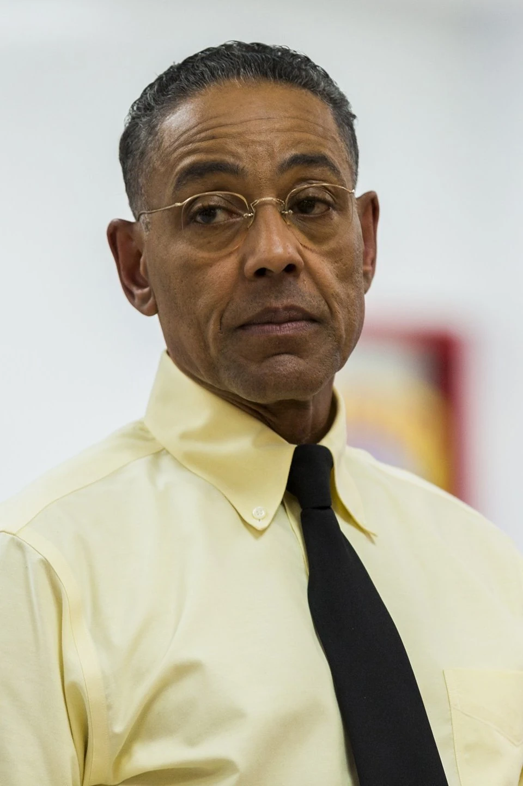
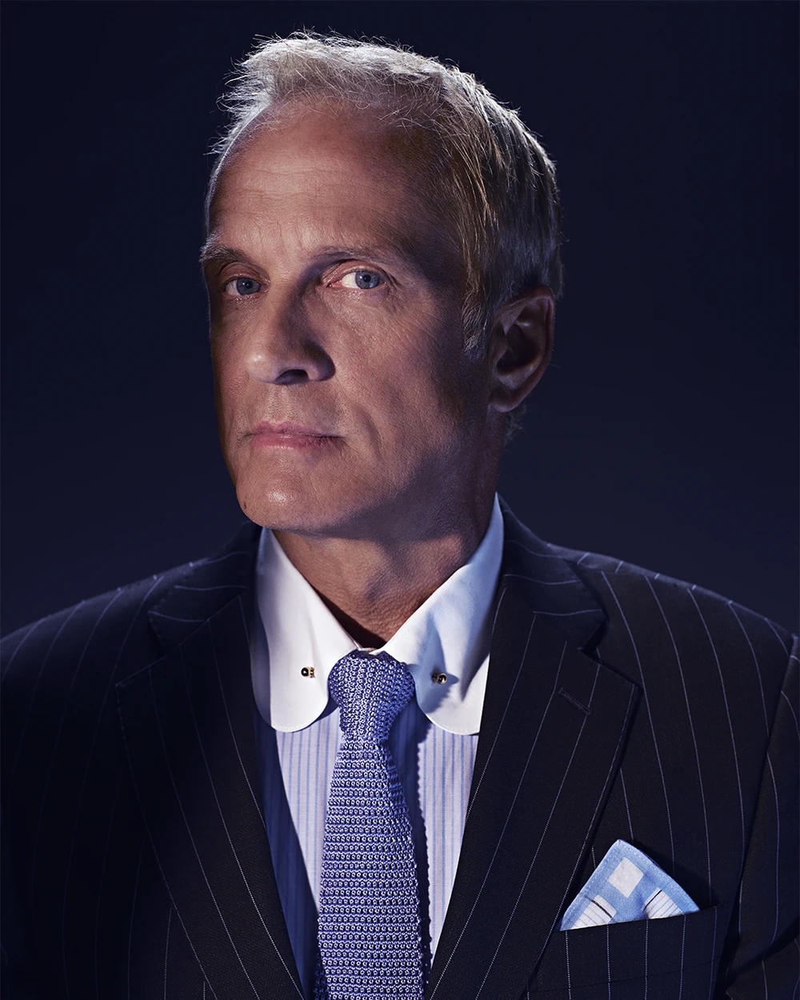
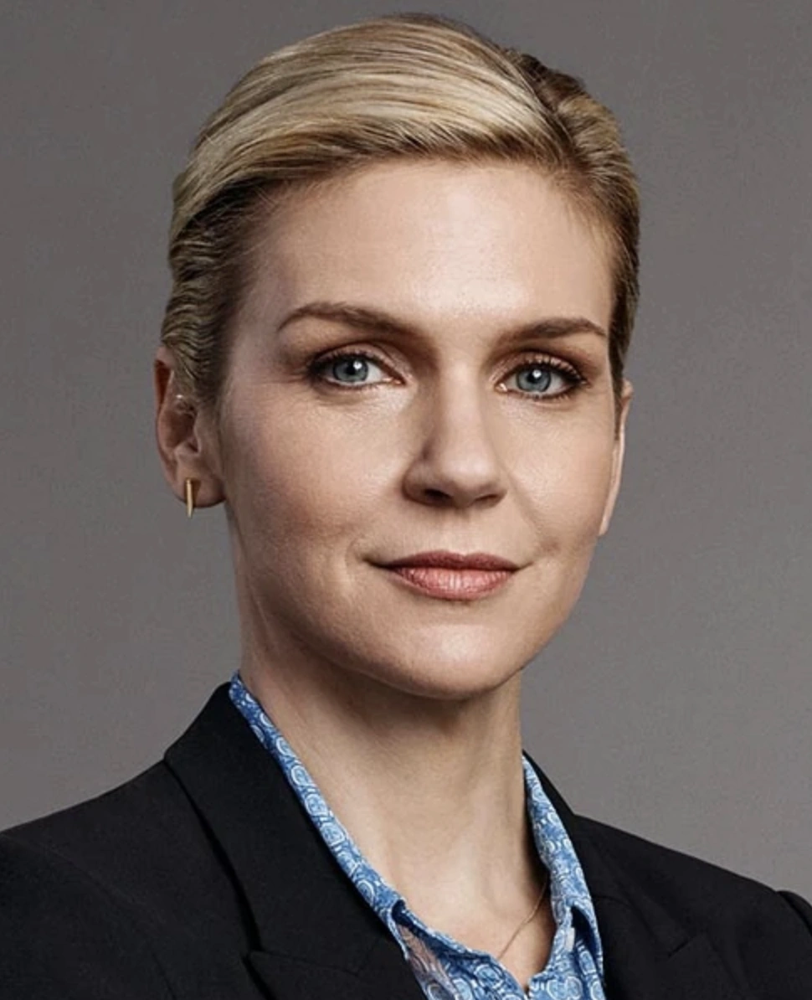
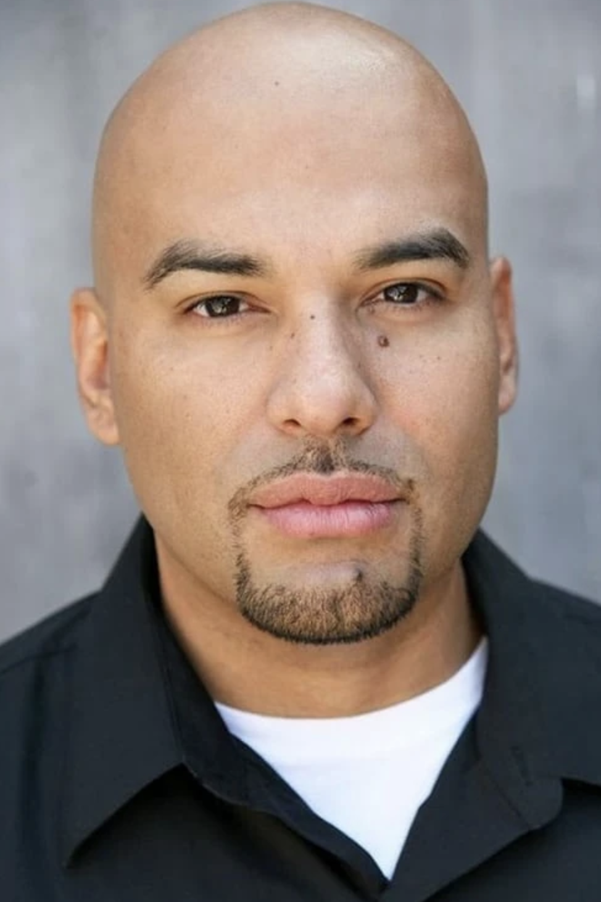

Web and Tech Team

Gustavo Fring, Web and Tech Head

Krazy-8, Web and Tech team
Mike, Web and Tech team
Social Media Team
Chuck, Social Media Head

Howard Hamlin, Social Media Team

Hank, Social Media Team
PR and Marketing Team

Kim Wexler, PR and Marketing Head
